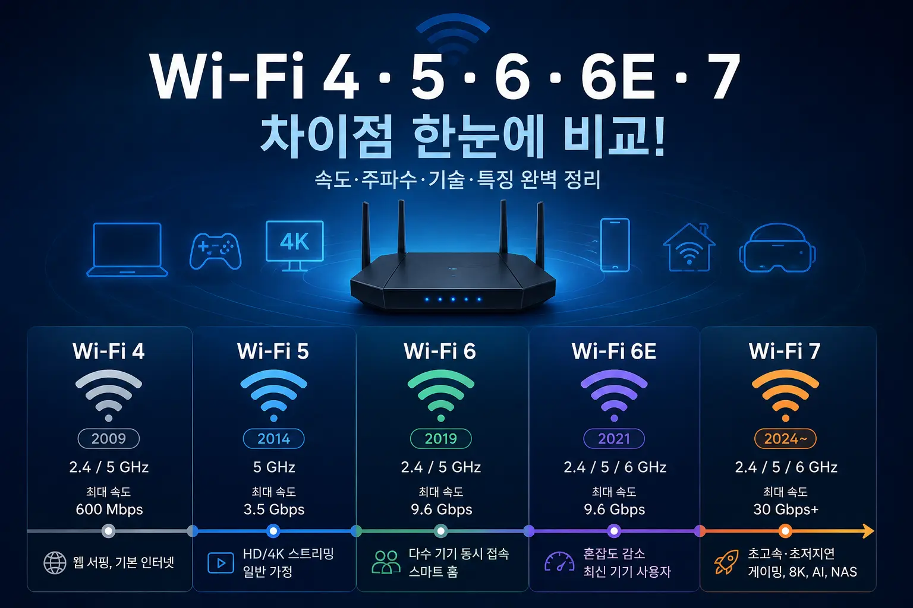

Wi-Fi 4·5·6·6E·7 차이점 총정리, 우리 집에는 어떤 와이파이가 필요할까?

한 줄 요약: 지금 새 공유기를 산다면 대부분의 가정은 Wi-Fi 6만으로도 충분하고, 최신 스마트폰·노트북을 오래 쓸 계획이라면 Wi-Fi 6E, 고성능 NAS·VR·게이밍·8K 스트리밍까지 고려한다면 Wi-Fi 7을 검토할 만합니다.
와이파이 규격은 숫자가 커질수록 단순히 “최대 속도”만 빨라지는 것이 아닙니다. 실제로는 동시에 연결되는 기기 수, 혼잡한 환경에서의 안정성, 지연시간, 6GHz 대역 사용 여부, 공유기와 스마트폰이 같은 규격을 지원하는지에 따라 체감이 크게 달라집니다.
1. Wi-Fi 숫자는 무엇을 의미할까?
예전에는 와이파이 규격을 802.11n, 802.11ac, 802.11ax처럼 복잡한 이름으로 불렀습니다. 그런데 일반 소비자 입장에서는 어떤 규격이 더 최신인지 한눈에 알기 어려웠습니다. 그래서 Wi-Fi Alliance는 소비자가 쉽게 이해할 수 있도록 세대별 이름을 숫자로 정리했습니다.
쉽게 말해 Wi-Fi 4는 802.11n, Wi-Fi 5는 802.11ac, Wi-Fi 6와 6E는 802.11ax, Wi-Fi 7은 802.11be 기반 규격이라고 보면 됩니다. 숫자가 커질수록 더 최신 규격이며, 이론상 속도와 효율이 개선됩니다.
다만 여기서 중요한 점이 있습니다. 와이파이 규격이 최신이라고 해서 무조건 인터넷이 빨라지는 것은 아닙니다. 집에 들어오는 인터넷 회선이 500Mbps인데 Wi-Fi 7 공유기를 설치한다고 해서 갑자기 5Gbps 인터넷이 되는 것은 아닙니다. 공유기는 집 안에서 무선 신호를 더 효율적으로 뿌려주는 장비이고, 실제 인터넷 속도는 통신사 회선, 공유기 성능, 기기 성능, 집 구조, 벽 두께, 주변 간섭까지 함께 영향을 받습니다.
2. Wi-Fi 4·5·6·6E·7 한눈에 비교
아래 표는 일반 사용자가 공유기를 고를 때 꼭 봐야 하는 차이만 정리한 것입니다. 이론상 최대 속도는 제조사 안테나 구성, 채널 폭, 기기 지원 여부에 따라 달라질 수 있으므로 “체감 성능의 방향”을 이해하는 용도로 보는 것이 좋습니다.
| 규격 | 기술명 | 주요 주파수 | 특징 | 추천 대상 |
|---|---|---|---|---|
| Wi-Fi 4 | 802.11n | 2.4GHz / 5GHz | 구형 공유기에서 흔한 규격. 기본 웹서핑은 가능하지만 다수 기기 연결에는 약함. | 단순 인터넷, 오래된 기기 |
| Wi-Fi 5 | 802.11ac | 주로 5GHz | 기가 인터넷 보급기에 많이 사용된 규격. 영상 스트리밍과 일반 가정용으로 아직 사용 가능. | 웹서핑, OTT, 일반 가정 |
| Wi-Fi 6 | 802.11ax | 2.4GHz / 5GHz | OFDMA, MU-MIMO 등으로 여러 기기가 동시에 연결된 환경에서 효율 향상. | 스마트폰, 노트북, IoT가 많은 집 |
| Wi-Fi 6E | 802.11ax 확장 | 2.4GHz / 5GHz / 6GHz | 6GHz 대역을 추가해 혼잡도를 줄임. 단, 기기와 국가별 지원 여부 확인 필요. | 최신 노트북·스마트폰 사용자 |
| Wi-Fi 7 | 802.11be | 2.4GHz / 5GHz / 6GHz | 320MHz 채널, 4096-QAM, MLO 등으로 초고속·저지연 환경을 목표로 함. | 고성능 게이밍, VR, 8K, NAS, 장기 사용 목적 |
3. 규격별 특징과 장단점
Wi-Fi 4: 아직도 쓰고 있다면 교체를 고민할 시점
Wi-Fi 4는 2000년대 후반부터 널리 사용된 규격입니다. 단순 웹서핑이나 메시지 확인 정도라면 아직도 사용할 수 있지만, 요즘처럼 스마트폰, 태블릿, 노트북, TV, 로봇청소기, 공기청정기, CCTV, AI 스피커까지 연결되는 환경에서는 한계가 뚜렷합니다.
특히 오래된 2.4GHz 위주 공유기는 주변 집의 와이파이, 블루투스, 전자레인지 등과 간섭이 생기기 쉽습니다. 속도가 느린 것도 문제지만, 영상이 끊기거나 화상회의가 불안정하거나 방마다 신호 차이가 심하게 나는 경우가 많습니다.
Wi-Fi 5: 아직 쓸 수 있지만 새로 사기에는 애매한 규격
Wi-Fi 5는 5GHz 대역을 중심으로 속도가 크게 좋아진 규격입니다. 500Mbps 또는 1Gbps 인터넷을 사용하는 일반 가정에서 오랫동안 표준처럼 쓰였습니다. 스마트폰 2~3대, 노트북 1~2대, TV 스트리밍 정도라면 여전히 큰 불편 없이 사용할 수 있습니다.
하지만 새 공유기를 구매하는 상황이라면 Wi-Fi 5를 일부러 선택할 이유는 줄었습니다. 가격 차이가 크지 않다면 Wi-Fi 6 공유기가 더 합리적입니다. Wi-Fi 6는 단순 최고 속도보다 여러 기기가 동시에 접속했을 때의 효율이 좋아졌기 때문입니다.
Wi-Fi 6: 지금 가장 무난한 가정용 기준
현재 대부분의 가정에 가장 무난한 선택은 Wi-Fi 6입니다. Wi-Fi 6는 스마트폰, 노트북, 태블릿, 게임기, TV, 스마트홈 기기가 동시에 연결된 환경을 전제로 설계된 규격입니다. 그래서 단순히 “속도 숫자”보다 혼잡한 상황에서 안정적으로 나눠 쓰는 능력이 좋아졌습니다.
대표적으로 OFDMA는 여러 기기가 데이터를 조금씩 나눠 주고받을 때 효율을 높여줍니다. MU-MIMO는 여러 기기와 동시에 통신하는 데 도움을 줍니다. TWT(Target Wake Time)는 배터리 기반 IoT 기기의 전력 효율에도 영향을 줍니다.
Wi-Fi 6E: 6GHz 대역을 쓰고 싶다면 선택
Wi-Fi 6E는 Wi-Fi 6의 확장판으로 이해하면 쉽습니다. 핵심은 6GHz 대역 추가입니다. 기존 2.4GHz와 5GHz 대역은 이미 주변 공유기와 기기들로 매우 혼잡한 경우가 많습니다. 6GHz는 비교적 새롭게 열린 넓은 도로에 가깝기 때문에, 지원 기기끼리는 더 쾌적한 연결을 기대할 수 있습니다.
다만 단점도 있습니다. 6GHz는 주파수가 높은 만큼 벽을 통과하는 능력이 2.4GHz보다 약합니다. 즉, 공유기와 같은 방 또는 가까운 거리에서는 장점이 크지만, 벽이 여러 개 있는 구조에서는 기대보다 체감이 약할 수 있습니다. 또한 스마트폰, 노트북, 태블릿이 Wi-Fi 6E를 지원해야 6GHz 대역을 실제로 사용할 수 있습니다.
Wi-Fi 7: 빠르지만 모두에게 필요한 것은 아님
Wi-Fi 7은 802.11be 기반의 최신 세대입니다. Wi-Fi 7은 320MHz 채널, 4096-QAM, Multi-Link Operation(MLO) 같은 기술을 통해 더 높은 처리량과 낮은 지연시간을 목표로 합니다. 특히 MLO는 여러 주파수 대역을 동시에 활용해 속도와 안정성을 높이는 핵심 기능으로 소개됩니다.
하지만 2026년 기준으로도 Wi-Fi 7은 “누구에게나 당장 필요한 규격”이라기보다 장기 사용, 고성능 환경, 최신 기기 중심 사용자에게 적합한 선택에 가깝습니다. Wi-Fi 7 공유기는 가격이 상대적으로 높고, 스마트폰이나 노트북도 Wi-Fi 7을 지원해야 장점을 온전히 느낄 수 있습니다.
4. 실제 체감 속도는 얼마나 다를까?
공유기 제품 설명을 보면 “최대 9.6Gbps”, “최대 30Gbps 이상” 같은 문구가 보입니다. 하지만 이 숫자는 여러 대역과 안테나를 합산한 이론상 수치인 경우가 많습니다. 실제 스마트폰 한 대가 체감하는 속도와는 차이가 있습니다.
예를 들어 집 인터넷이 500Mbps라면 와이파이 규격이 아무리 좋아도 외부 인터넷 다운로드 속도는 회선 한계를 넘기 어렵습니다. 다만 같은 집 안에서 NAS로 파일을 옮기거나, 무선 백홀을 쓰는 메시 와이파이를 구성하거나, 여러 기기가 동시에 고화질 영상을 보는 상황에서는 최신 규격의 장점이 나타날 수 있습니다.
체감 속도를 결정하는 요소는 크게 다섯 가지입니다.
- 통신사 인터넷 회선: 100Mbps, 500Mbps, 1Gbps, 2.5Gbps 이상인지 확인해야 합니다.
- 공유기 성능: 규격뿐 아니라 CPU, 메모리, 안테나 수, 포트 속도도 중요합니다.
- 연결 기기 성능: 스마트폰이나 노트북이 Wi-Fi 6, 6E, 7을 지원해야 합니다.
- 집 구조: 벽, 문, 콘크리트, 철근, 공유기 위치가 신호에 큰 영향을 줍니다.
- 주변 간섭: 아파트처럼 주변 공유기가 많은 환경에서는 5GHz·6GHz 활용이 중요합니다.
5. 우리 집에는 어떤 Wi-Fi가 맞을까?
1인 가구·원룸: Wi-Fi 6 보급형이면 충분한 경우가 많음
원룸이나 작은 오피스텔에서는 공유기와 기기 사이의 거리가 짧기 때문에 고가의 Wi-Fi 7 공유기까지 필요하지 않은 경우가 많습니다. 인터넷 회선이 100Mbps 또는 500Mbps이고, 주 사용이 웹서핑, 유튜브, 넷플릭스, 문서 작업이라면 Wi-Fi 6 보급형 공유기만으로도 충분합니다.
일반 아파트·가족 3~4인: Wi-Fi 6 중급기 추천
가족 구성원이 여러 명이고 스마트폰, 태블릿, 노트북, TV, 게임기, 스마트홈 기기가 많다면 Wi-Fi 6 중급기를 추천합니다. 이 경우 최고 속도보다 안정성과 커버리지가 중요합니다. 집이 넓거나 방이 여러 개라면 공유기 한 대보다 메시 와이파이 구성이 더 효과적일 수 있습니다.
최신 스마트폰·노트북을 오래 쓸 계획: Wi-Fi 6E 고려
최근 출시된 고급 스마트폰이나 노트북은 Wi-Fi 6E 또는 Wi-Fi 7을 지원하는 경우가 늘고 있습니다. 집 안에서 6GHz 대역을 활용하고 싶고, 공유기와 가까운 공간에서 고속 연결을 자주 쓴다면 Wi-Fi 6E가 좋은 선택이 될 수 있습니다.
게이밍·NAS·VR·고속 내부망: Wi-Fi 7 검토
온라인 게임에서 지연시간에 민감하거나, NAS에 대용량 영상을 자주 백업하거나, 무선으로 고화질 영상 편집 파일을 옮기거나, VR·AR 기기를 사용할 계획이라면 Wi-Fi 7의 장점이 의미 있을 수 있습니다. 특히 2.5GbE 이상의 유선 포트가 있는 공유기와 고성능 기기를 함께 사용할 때 효과가 커집니다.
| 사용 환경 | 추천 규격 | 이유 |
|---|---|---|
| 웹서핑, 카톡, 유튜브 중심 | Wi-Fi 5도 가능 / 새 구매는 Wi-Fi 6 | 고성능보다 가격과 안정성이 중요 |
| 가족 구성원 많고 기기 10대 이상 | Wi-Fi 6 | 동시 접속 효율과 안정성 향상 |
| 최신 노트북, 스마트폰 사용 | Wi-Fi 6E | 6GHz 대역 활용 가능 |
| 게이밍, VR, NAS, 대용량 파일 이동 | Wi-Fi 7 | 저지연, 고속 내부망, MLO 등 장점 |
| 집이 넓고 방마다 신호가 약함 | Wi-Fi 6 이상 메시 구성 | 규격보다 커버리지 개선이 우선 |
6. 공유기 구매 전 체크리스트
와이파이 공유기를 살 때 “Wi-Fi 7 지원” 문구만 보고 고르면 실패할 수 있습니다. 실제 만족도는 규격보다 세부 사양에서 갈리는 경우가 많습니다.
첫째, 인터넷 회선 속도를 확인하세요
집 인터넷이 100Mbps인데 30Gbps급 공유기를 사는 것은 대부분 과투자입니다. 반대로 1Gbps 이상 회선을 쓰는데 공유기 WAN/LAN 포트가 1GbE까지만 지원하면 내부망이나 회선 활용에 제한이 생길 수 있습니다. 2.5Gbps 이상 회선을 고려한다면 공유기의 WAN 포트와 LAN 포트 속도도 꼭 확인해야 합니다.
둘째, 내 기기가 어떤 Wi-Fi를 지원하는지 확인하세요
아이폰, 갤럭시, 노트북, 데스크톱 무선랜카드가 어떤 규격을 지원하는지 확인해야 합니다. 공유기만 Wi-Fi 6E나 Wi-Fi 7이어도 연결 기기가 해당 규격을 지원하지 않으면 6GHz 대역이나 최신 기능을 사용할 수 없습니다.
셋째, 집 구조를 먼저 보세요
공유기 한 대로 집 전체를 커버하기 어려운 구조라면 비싼 공유기 한 대보다 메시 와이파이 2대 구성이 나을 수 있습니다. 특히 구축 아파트, 철근 콘크리트 벽, 긴 복도형 구조, 방이 많은 구조에서는 공유기 위치가 성능을 크게 좌우합니다.
넷째, 안테나 수와 브랜드 앱 편의성도 중요합니다
고급 공유기는 단순히 신호가 강한 것뿐 아니라 트래픽 관리, 게스트 네트워크, 자녀 보호, 펌웨어 업데이트, 보안 기능, 앱 관리 편의성이 좋습니다. 초보자라면 설정 화면이 쉬운 브랜드를 선택하는 것도 중요합니다.
다섯째, 너무 오래된 공유기는 보안상 교체가 필요할 수 있습니다
공유기도 작은 컴퓨터에 가깝습니다. 펌웨어 업데이트가 끊긴 오래된 공유기는 보안 취약점 대응이 어려울 수 있습니다. 속도 문제가 없더라도 7~8년 이상 사용한 공유기라면 교체를 검토해볼 만합니다.
7. 자주 묻는 질문 FAQ
Q1. Wi-Fi 6 공유기를 사면 인터넷 속도가 무조건 빨라지나요?
무조건은 아닙니다. 집에 들어오는 인터넷 회선 속도가 낮거나, 스마트폰이 Wi-Fi 6를 지원하지 않거나, 공유기 위치가 좋지 않으면 체감이 제한적일 수 있습니다. 다만 여러 기기가 동시에 연결된 환경에서는 Wi-Fi 5보다 안정성이 좋아질 가능성이 큽니다.
Q2. Wi-Fi 6와 Wi-Fi 6E의 가장 큰 차이는 무엇인가요?
가장 큰 차이는 6GHz 대역 사용 여부입니다. Wi-Fi 6는 주로 2.4GHz와 5GHz를 사용하고, Wi-Fi 6E는 여기에 6GHz 대역을 추가로 활용합니다. 6GHz는 혼잡도가 낮아 쾌적할 수 있지만, 지원 기기가 필요하고 벽 통과 성능은 상대적으로 약할 수 있습니다.
Q3. Wi-Fi 7 공유기를 지금 사도 괜찮을까요?
최신 스마트폰, 노트북, NAS, 고속 인터넷 회선, 게이밍 환경을 갖추고 장기간 사용할 계획이라면 괜찮습니다. 하지만 일반적인 웹서핑, 영상 시청, 재택근무 용도라면 Wi-Fi 6 공유기가 가성비 면에서 더 합리적인 경우가 많습니다.
Q4. 2.4GHz와 5GHz, 6GHz는 어떻게 다른가요?
2.4GHz는 도달 거리가 길고 벽 통과가 비교적 좋지만 속도가 낮고 혼잡합니다. 5GHz는 속도가 빠르고 일반 가정에서 많이 쓰이지만 거리는 2.4GHz보다 짧습니다. 6GHz는 더 넓고 덜 혼잡한 대역이지만 지원 기기가 필요하고 장애물에 약한 편입니다.
Q5. 공유기 위치는 어디가 좋나요?
집 중앙에 가깝고, 바닥보다 높은 위치가 좋습니다. TV 뒤, 금속 선반 안, 전자레인지 근처, 두꺼운 벽 뒤는 피하는 것이 좋습니다. 공유기를 구석에 두면 반대편 방에서 신호가 약해질 수 있습니다.
Q6. Wi-Fi가 느릴 때 공유기부터 바꾸면 되나요?
먼저 유선 속도 측정, 공유기 재부팅, 펌웨어 업데이트, 공유기 위치 변경, 채널 자동 설정 확인을 해보는 것이 좋습니다. 유선도 느리면 통신사 회선 문제일 수 있고, 무선만 느리면 공유기나 와이파이 환경 문제일 가능성이 큽니다.
마무리: 지금 기준 가장 현실적인 선택은?
WORTHPICK 기준으로 정리하면, 새 공유기를 사는 대부분의 가정에는 Wi-Fi 6 중급기가 가장 무난합니다. 가격, 호환성, 안정성, 성능의 균형이 좋기 때문입니다. 최신 기기를 많이 쓰고 6GHz 대역을 활용하고 싶다면 Wi-Fi 6E, 고성능 게이밍·NAS·VR·장기 사용까지 고려한다면 Wi-Fi 7을 선택하면 됩니다.
가장 피해야 할 선택은 “숫자가 높으니 무조건 좋겠지”라고 생각하고 비싼 공유기를 사는 것입니다. 공유기는 인터넷 회선, 집 구조, 연결 기기, 사용 목적과 함께 봐야 만족도가 높습니다.